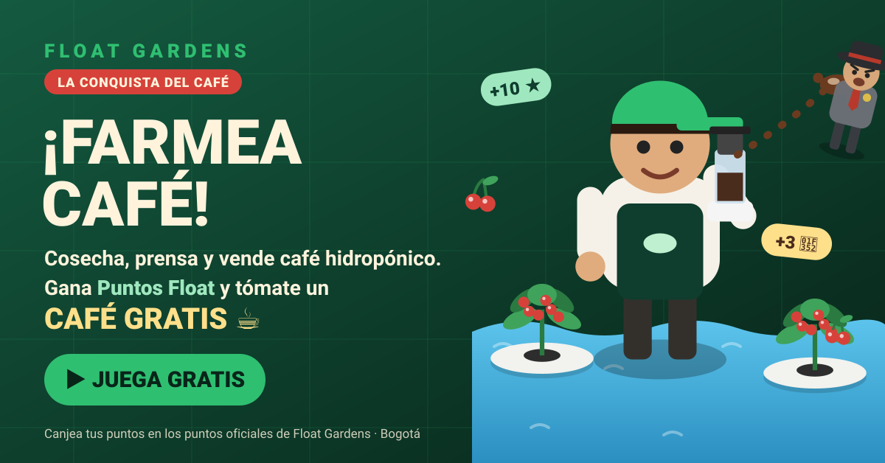
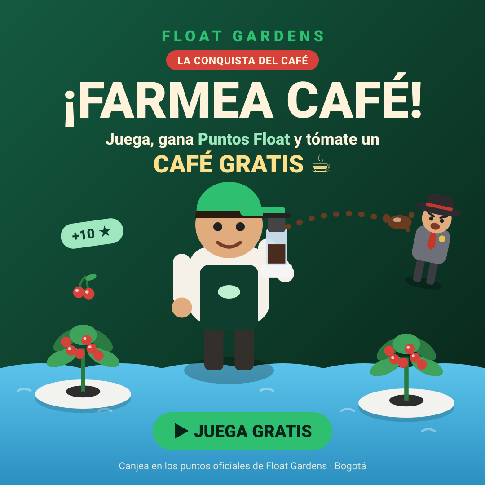
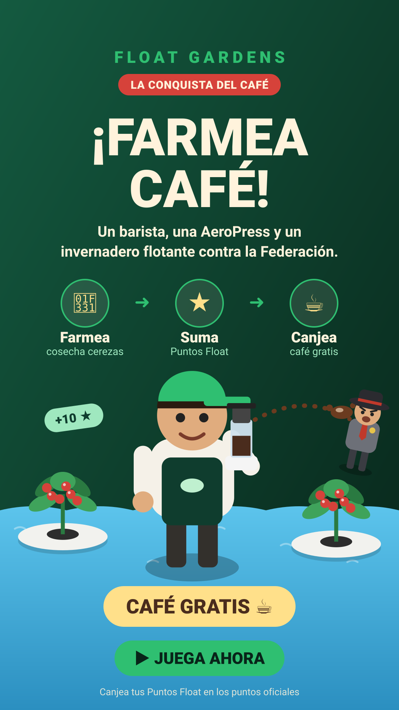

Textos para publicar
🌱☕ ¡FARMEA CAFÉ! ☕🌱
Llegó Float Gardens: La Conquista del Café, el shooter de mundo abierto de nuestro café hidropónico flotante hecho en Bogotá.
Recorre Chapinero, La Candelaria y la Zona T en tercera persona, cosecha cerezas, vende café y conquista la ciudad con tu AeroPress.
Cada cereza que farmeas suma Puntos Float ⭐ ¡Júntalos y tómate un café GRATIS en un punto oficial de Float Gardens!
#FloatGardens #CaféHidropónico #AeroPress #CaféDeBogotá
Un barista. Una AeroPress. Un invernadero flotante. 🌊🌱
Y Arcadia Bean Corp. no quiere competencia. 😤
¿Te le mides a conquistar el mundo del café? Juega gratis, gana Puntos Float y canjéalos por café de verdad.
#FloatGardens #LaConquistaDelCafé
⭐ Farmea → Suma → Canjea ☕
1. Cosecha café hidropónico en el juego.
2. Gana Puntos Float por cada cereza, cada café vendido y cada inspector espantado.
3. Muestra tu cupón en Float Gardens y tómate un café gratis.
Proyecto colaborativo de café hidropónico en Bogotá 💚